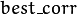
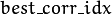

Feature Detection and Description¶
RandomizedTree¶
-
class
RandomizedTree¶
Class containing a base structure for RTreeClassifier.
class CV_EXPORTS RandomizedTree
{
public:
friend class RTreeClassifier;
RandomizedTree();
~RandomizedTree();
void train(std::vector<BaseKeypoint> const& base_set,
RNG &rng, int depth, int views,
size_t reduced_num_dim, int num_quant_bits);
void train(std::vector<BaseKeypoint> const& base_set,
RNG &rng, PatchGenerator &make_patch, int depth,
int views, size_t reduced_num_dim, int num_quant_bits);
// next two functions are EXPERIMENTAL
//(do not use unless you know exactly what you do)
static void quantizeVector(float *vec, int dim, int N, float bnds[2],
int clamp_mode=0);
static void quantizeVector(float *src, int dim, int N, float bnds[2],
uchar *dst);
// patch_data must be a 32x32 array (no row padding)
float* getPosterior(uchar* patch_data);
const float* getPosterior(uchar* patch_data) const;
uchar* getPosterior2(uchar* patch_data);
void read(const char* file_name, int num_quant_bits);
void read(std::istream &is, int num_quant_bits);
void write(const char* file_name) const;
void write(std::ostream &os) const;
int classes() { return classes_; }
int depth() { return depth_; }
void discardFloatPosteriors() { freePosteriors(1); }
inline void applyQuantization(int num_quant_bits)
{ makePosteriors2(num_quant_bits); }
private:
int classes_;
int depth_;
int num_leaves_;
std::vector<RTreeNode> nodes_;
float **posteriors_; // 16-byte aligned posteriors
uchar **posteriors2_; // 16-byte aligned posteriors
std::vector<int> leaf_counts_;
void createNodes(int num_nodes, RNG &rng);
void allocPosteriorsAligned(int num_leaves, int num_classes);
void freePosteriors(int which);
// which: 1=posteriors_, 2=posteriors2_, 3=both
void init(int classes, int depth, RNG &rng);
void addExample(int class_id, uchar* patch_data);
void finalize(size_t reduced_num_dim, int num_quant_bits);
int getIndex(uchar* patch_data) const;
inline float* getPosteriorByIndex(int index);
inline uchar* getPosteriorByIndex2(int index);
inline const float* getPosteriorByIndex(int index) const;
void convertPosteriorsToChar();
void makePosteriors2(int num_quant_bits);
void compressLeaves(size_t reduced_num_dim);
void estimateQuantPercForPosteriors(float perc[2]);
};
Note
- : PYTHON : An example using Randomized Tree training for letter recognition can be found at opencv_source_code/samples/python2/letter_recog.py
RandomizedTree::train¶
Trains a randomized tree using an input set of keypoints.
-
C++:
RandomizedTree::train(vector<BaseKeypoint> const& base_set, RNG& rng, int depth, int views, size_t reduced_num_dim, int num_quant_bits)¶
-
C++:
RandomizedTree::train(vector<BaseKeypoint> const& base_set, RNG& rng, PatchGenerator& make_patch, int depth, int views, size_t reduced_num_dim, int num_quant_bits)¶ Parameters: - base_set – Vector of the
BaseKeypointtype. It contains image keypoints used for training. - rng – Random-number generator used for training.
- make_patch – Patch generator used for training.
- depth – Maximum tree depth.
- views – Number of random views of each keypoint neighborhood to generate.
- reduced_num_dim – Number of dimensions used in the compressed signature.
- num_quant_bits – Number of bits used for quantization.
- base_set – Vector of the
Note
- : An example on training a Random Tree Classifier for letter recognition can be found at opencv_source_codesamplescppletter_recog.cpp
RandomizedTree::read¶
Reads a pre-saved randomized tree from a file or stream.
-
C++:
RandomizedTree::read(const char* file_name, int num_quant_bits)¶
-
C++:
RandomizedTree::read(std::istream& is, int num_quant_bits)¶ Parameters: - file_name – Name of the file that contains randomized tree data.
- is – Input stream associated with the file that contains randomized tree data.
- num_quant_bits – Number of bits used for quantization.
RandomizedTree::write¶
Writes the current randomized tree to a file or stream.
-
C++:
RandomizedTree::write(const char* file_name)const¶
-
C++:
RandomizedTree::write(std::ostream& os)const¶ Parameters: - file_name – Name of the file where randomized tree data is stored.
- os – Output stream associated with the file where randomized tree data is stored.
RandomizedTree::applyQuantization¶
-
C++:
RandomizedTree::applyQuantization(int num_quant_bits)¶ Applies quantization to the current randomized tree.
Parameters: - num_quant_bits – Number of bits used for quantization.
RTreeNode¶
-
struct
RTreeNode¶
Class containing a base structure for RandomizedTree.
struct RTreeNode
{
short offset1, offset2;
RTreeNode() {}
RTreeNode(uchar x1, uchar y1, uchar x2, uchar y2)
: offset1(y1*PATCH_SIZE + x1),
offset2(y2*PATCH_SIZE + x2)
{}
//! Left child on 0, right child on 1
inline bool operator() (uchar* patch_data) const
{
return patch_data[offset1] > patch_data[offset2];
}
};
RTreeClassifier¶
-
class
RTreeClassifier¶
Class containing RTreeClassifier. It represents the Calonder descriptor originally introduced by Michael Calonder.
class CV_EXPORTS RTreeClassifier
{
public:
static const int DEFAULT_TREES = 48;
static const size_t DEFAULT_NUM_QUANT_BITS = 4;
RTreeClassifier();
void train(std::vector<BaseKeypoint> const& base_set,
RNG &rng,
int num_trees = RTreeClassifier::DEFAULT_TREES,
int depth = DEFAULT_DEPTH,
int views = DEFAULT_VIEWS,
size_t reduced_num_dim = DEFAULT_REDUCED_NUM_DIM,
int num_quant_bits = DEFAULT_NUM_QUANT_BITS,
bool print_status = true);
void train(std::vector<BaseKeypoint> const& base_set,
RNG &rng,
PatchGenerator &make_patch,
int num_trees = RTreeClassifier::DEFAULT_TREES,
int depth = DEFAULT_DEPTH,
int views = DEFAULT_VIEWS,
size_t reduced_num_dim = DEFAULT_REDUCED_NUM_DIM,
int num_quant_bits = DEFAULT_NUM_QUANT_BITS,
bool print_status = true);
// sig must point to a memory block of at least
//classes()*sizeof(float|uchar) bytes
void getSignature(IplImage *patch, uchar *sig);
void getSignature(IplImage *patch, float *sig);
void getSparseSignature(IplImage *patch, float *sig,
float thresh);
static int countNonZeroElements(float *vec, int n, double tol=1e-10);
static inline void safeSignatureAlloc(uchar **sig, int num_sig=1,
int sig_len=176);
static inline uchar* safeSignatureAlloc(int num_sig=1,
int sig_len=176);
inline int classes() { return classes_; }
inline int original_num_classes()
{ return original_num_classes_; }
void setQuantization(int num_quant_bits);
void discardFloatPosteriors();
void read(const char* file_name);
void read(std::istream &is);
void write(const char* file_name) const;
void write(std::ostream &os) const;
std::vector<RandomizedTree> trees_;
private:
int classes_;
int num_quant_bits_;
uchar **posteriors_;
ushort *ptemp_;
int original_num_classes_;
bool keep_floats_;
};
RTreeClassifier::train¶
Trains a randomized tree classifier using an input set of keypoints.
-
C++:
RTreeClassifier::train(vector<BaseKeypoint> const& base_set, RNG& rng, int num_trees=RTreeClassifier::DEFAULT_TREES, int depth=RandomizedTree::DEFAULT_DEPTH, int views=RandomizedTree::DEFAULT_VIEWS, size_t reduced_num_dim=RandomizedTree::DEFAULT_REDUCED_NUM_DIM, int num_quant_bits=DEFAULT_NUM_QUANT_BITS )¶
-
C++:
RTreeClassifier::train(vector<BaseKeypoint> const& base_set, RNG& rng, PatchGenerator& make_patch, int num_trees=RTreeClassifier::DEFAULT_TREES, int depth=RandomizedTree::DEFAULT_DEPTH, int views=RandomizedTree::DEFAULT_VIEWS, size_t reduced_num_dim=RandomizedTree::DEFAULT_REDUCED_NUM_DIM, int num_quant_bits=DEFAULT_NUM_QUANT_BITS )¶ Parameters: - base_set – Vector of the
BaseKeypointtype. It contains image keypoints used for training. - rng – Random-number generator used for training.
- make_patch – Patch generator used for training.
- num_trees – Number of randomized trees used in
RTreeClassificator. - depth – Maximum tree depth.
- views – Number of random views of each keypoint neighborhood to generate.
- reduced_num_dim – Number of dimensions used in the compressed signature.
- num_quant_bits – Number of bits used for quantization.
- base_set – Vector of the
RTreeClassifier::getSignature¶
Returns a signature for an image patch.
-
C++:
RTreeClassifier::getSignature(IplImage* patch, uchar* sig)¶
-
C++:
RTreeClassifier::getSignature(IplImage* patch, float* sig)¶ Parameters: - patch – Image patch to calculate the signature for.
- sig – Output signature (array dimension is
reduced_num_dim).
RTreeClassifier::getSparseSignature¶
Returns a sparse signature for an image patch
-
C++:
RTreeClassifier::getSparseSignature(IplImage* patch, float* sig, float thresh)¶ Parameters: - patch – Image patch to calculate the signature for.
- sig – Output signature (array dimension is
reduced_num_dim). - thresh – Threshold used for compressing the signature.
Returns a signature for an image patch similarly to
getSignaturebut uses a threshold for removing all signature elements below the threshold so that the signature is compressed.
RTreeClassifier::countNonZeroElements¶
Returns the number of non-zero elements in an input array.
-
C++:
RTreeClassifier::countNonZeroElements(float* vec, int n, double tol=1e-10)¶ Parameters: - vec – Input vector containing float elements.
- n – Input vector size.
- tol – Threshold used for counting elements. All elements less than
tolare considered as zero elements.
RTreeClassifier::read¶
Reads a pre-saved RTreeClassifier from a file or stream.
-
C++:
RTreeClassifier::read(const char* file_name)¶
-
C++:
RTreeClassifier::read(std::istream& is)¶ Parameters: - file_name – Name of the file that contains randomized tree data.
- is – Input stream associated with the file that contains randomized tree data.
RTreeClassifier::write¶
Writes the current RTreeClassifier to a file or stream.
-
C++:
RTreeClassifier::write(const char* file_name)const¶
-
C++:
RTreeClassifier::write(std::ostream& os)const¶ Parameters: - file_name – Name of the file where randomized tree data is stored.
- os – Output stream associated with the file where randomized tree data is stored.
RTreeClassifier::setQuantization¶
Applies quantization to the current randomized tree.
-
C++:
RTreeClassifier::setQuantization(int num_quant_bits)¶ Parameters: - num_quant_bits – Number of bits used for quantization.
The example below demonstrates the usage of RTreeClassifier for matching the features. The features are extracted from the test and train images with SURF. Output is
 and
 arrays that keep the best probabilities and corresponding features indices for every train feature.
CvMemStorage* storage = cvCreateMemStorage(0);
CvSeq *objectKeypoints = 0, *objectDescriptors = 0;
CvSeq *imageKeypoints = 0, *imageDescriptors = 0;
CvSURFParams params = cvSURFParams(500, 1);
cvExtractSURF( test_image, 0, &imageKeypoints, &imageDescriptors,
storage, params );
cvExtractSURF( train_image, 0, &objectKeypoints, &objectDescriptors,
storage, params );
RTreeClassifier detector;
int patch_width = PATCH_SIZE;
iint patch_height = PATCH_SIZE;
vector<BaseKeypoint> base_set;
int i=0;
CvSURFPoint* point;
for (i=0;i<(n_points > 0 ? n_points : objectKeypoints->total);i++)
{
point=(CvSURFPoint*)cvGetSeqElem(objectKeypoints,i);
base_set.push_back(
BaseKeypoint(point->pt.x,point->pt.y,train_image));
}
//Detector training
RNG rng( cvGetTickCount() );
PatchGenerator gen(0,255,2,false,0.7,1.3,-CV_PI/3,CV_PI/3,
-CV_PI/3,CV_PI/3);
printf("RTree Classifier training...n");
detector.train(base_set,rng,gen,24,DEFAULT_DEPTH,2000,
(int)base_set.size(), detector.DEFAULT_NUM_QUANT_BITS);
printf("Donen");
float* signature = new float[detector.original_num_classes()];
float* best_corr;
int* best_corr_idx;
if (imageKeypoints->total > 0)
{
best_corr = new float[imageKeypoints->total];
best_corr_idx = new int[imageKeypoints->total];
}
for(i=0; i < imageKeypoints->total; i++)
{
point=(CvSURFPoint*)cvGetSeqElem(imageKeypoints,i);
int part_idx = -1;
float prob = 0.0f;
CvRect roi = cvRect((int)(point->pt.x) - patch_width/2,
(int)(point->pt.y) - patch_height/2,
patch_width, patch_height);
cvSetImageROI(test_image, roi);
roi = cvGetImageROI(test_image);
if(roi.width != patch_width || roi.height != patch_height)
{
best_corr_idx[i] = part_idx;
best_corr[i] = prob;
}
else
{
cvSetImageROI(test_image, roi);
IplImage* roi_image =
cvCreateImage(cvSize(roi.width, roi.height),
test_image->depth, test_image->nChannels);
cvCopy(test_image,roi_image);
detector.getSignature(roi_image, signature);
for (int j = 0; j< detector.original_num_classes();j++)
{
if (prob < signature[j])
{
part_idx = j;
prob = signature[j];
}
}
best_corr_idx[i] = part_idx;
best_corr[i] = prob;
if (roi_image)
cvReleaseImage(&roi_image);
}
cvResetImageROI(test_image);
}
Help and Feedback
You did not find what you were looking for?- Ask a question on the Q&A forum.
- If you think something is missing or wrong in the documentation, please file a bug report.

Table Of Contents
- Feature Detection and Description
- RandomizedTree
- RandomizedTree::train
- RandomizedTree::read
- RandomizedTree::write
- RandomizedTree::applyQuantization
- RTreeNode
- RTreeClassifier
- RTreeClassifier::train
- RTreeClassifier::getSignature
- RTreeClassifier::getSparseSignature
- RTreeClassifier::countNonZeroElements
- RTreeClassifier::read
- RTreeClassifier::write
- RTreeClassifier::setQuantization
Previous topic
Next topic
Common Interfaces of Descriptor Extractors